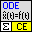
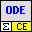

Owning Palette: CE Math
VIs to solve Ordinary Differential Equations
| Palette Object | Description | |
|---|---|---|
 |
[ce] ODE R-K Solver of dX(t)_dt=F(t) particular case.vi | Uses Runge Kutta method to solve particular case of ordinary differential equation when solution depends only on a time variable: dX(t)/dt = F(t) , X(0) = X0 In addition, the VI allows specifying additional parameters and evaluating them in formula. |
 |
[ce] ODE Solver.vi | Solves ordinary differential equations: dX(t)/dt = F(X,t) , X(0) = X0 In addition, the VI allows specifying additional parameters and evaluating them in formula. To determine the solution you can use either Runge-Kutta or Euler method. The Runge Kutta method is more accurate, the Euler method is faster. |